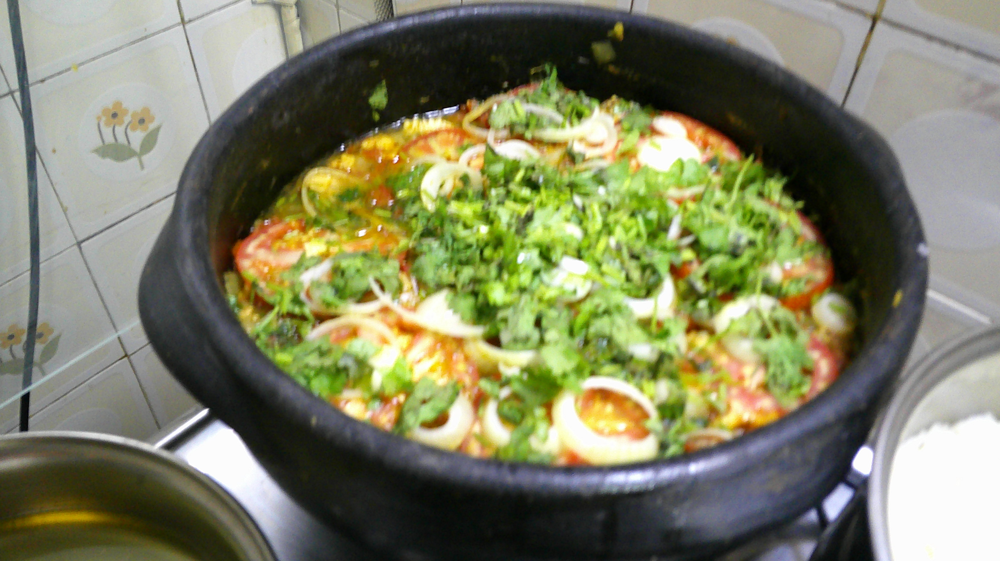

Moqueca de Bacalhau

Description
The Moqueca de Bacalhau is a typical and delicious
brazilian dish.
I bet you will never taste anything like it (the picture above doesn't do
it justice)!
Ingredients
- cebola
- alho
- gengibre
- pimentão
- tomates
- limão
- leite de coco
- coentro
- azeite de oliva e azeite de dendê
- sal e pimenta fresca
Steps
-
Aqueça um fio de azeite de oliva com um fio de azeite de dendê. Junte a
cebola, o alho, o gengibre, o pimentão com uma pitada de sal e espere
perfumar.
-
Misture o tomate, espere murchar e acrescente o bacalhau, o limão, o
leite de coco e tampe a panela.
-
Mantenha em fogo médio por uns 10 minutos, até que o bacalhau esteja
cozido, perfumado e com o molho encorpado e saboroso. Ajuste o sal,
regue com mais um fio de dendê, espalhe por cima o coentro, pimenta
fresca e retire do fogo.
- Sirva em seguida com molho de pimenta.
Home